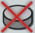

SETUP
- Scenario Sheet: Select a Scenario sheet and place it on the table. It has setup, scoring information and (sometimes) special rules that everyone should be aware of.
First game? Use Mission 1: The Call of the Ocean.
- Ocean Boards: Your Scenario tells you which boards to put into play, and the diagram shows their configuration. Find the boards and arrange them as shown. Leave enough room around them for this mission’s grid of boards to develop. The diagram on the sheet shows you how wide the grid may go; the maximum depth is five unless otherwise indicated. Once an Ocean board is in play, it is referred to as a zone.
Boards with near their name are part of specific missions; find and discard every board that your Scenario setup doesn’t instruct you to include.
-
Ocean Stacks: Shuffle all of the remaining boards into five separate face down stacks based on their depth.
-
Dive tokens: Shuffle the Dive tokens into a face-down supply. Draw tokens to make a face-down stack of the indicated amount on every zone that has a Dive site.
For example, The Sea Star has a Dive site that starts with four Dive tokens.
-
Journals: Shuffle the Anchor Journal and Journal decks separately. Lay out four random Anchor Journals face-up in a display; return the rest to the box. Keep the shuffled Journal deck face down near the display.
-
Specialists: Place the prepared Specialist tray nearby. Tiers 1-4 should remain properly organized from your last play. For Tier 5s, place three random tiles (blue Junior-side up) in each pocket of the Tier-5 column.
-
The Wave: Randomly choose a start player, and give them the Wave start marker.
-
Player Materials: Choose your player color. Take a Player mat, a Team Leader tile, and the component set in your color: 30 discs, 5 track cubes, 20 Impact markers, and 3 Vessels.
A) Place your five track cubes on the 0 spaces of your Attribute and Research tracks.
B) Place your Team Leader near your mat, and one of your discs on its activation circle.
C) Keep the remainder of your discs in a supply pile not near your Staging area. Discs in your supply are not available to you; they must enter play before you can use them, so it’s wise to keep them notably distant.
D) Keep your Impact markers near the Impact board.
E) Deploy your starting Vessel to the launch zone as described by the scenario, and gain its Arrival bonus (see Arrival Bonus pg. 9); keep your other Vessels near your player mat.
For example in Mission 1, place your Vessel at The Sea Star, and gain its Arrival bonus of one disc to your Staging Area.
PREPARING THE SPECIALIST TRAYTier 1-4 Specialists: Flip them all Junior (blue) side up, and separate them into stacks by title. Place the three tier-1 stacks in the first (leftmost) column’s pockets, the tier-2 stacks in the second column’s pockets, and so on.
Tier-5 Specialists: Shuffle them, Junior-side up. Stack three random tiles in each of the pockets in the rightmost column.
Once you’ve prepared the tray once, it will stay pretty much prepared for all future games; when you clean up, just put the Specialists back in their proper pockets. The only thing you need to do for each new game is re-randomize your Tier-5s!
Short on table space for your stacks? Try this stacking method: Criss-cross the stacks with shallowest on top and deepest on the bottom.
GAMEPLAY
The game is played over six rounds. Each round consists of two phases. The player with the Wave goes first in each phase, with the other players following in a clockwise order.
Your player mat includes a "flow of play" diagram to remind you of the phase order. Faint lines indicate the attribute track that affects each phase.
PHASE 1: PREPARATION (SUMMARY)Each player conducts the following three steps:
- 1a) RECRUITMENT · Recruit one Specialist
- 1b) EFFORT · Gain discs from your supply to your Staging Area
- 1c) REASSIGNMENT · Reclaim discs from your Specialists to your Staging Area
Players take turns activating Specialists to perform actions, continuing clockwise until everyone has passed.
REWARD SYMBOLSOften during the game you will gain rewards in various ways; methods include recruitment or promotion of Specialists, various aspects of the Ocean zones, the Impact Board, Journals, and more. Here are some of the common rewards and other symbols:
- Advance your Reputation track marker one step
- Advance your Inspiration track marker one step
- Advance your Coordination track marker one step
- Advance your Ingenuity track marker one step
- Advance an attribute marker of your choice one step
- Advance your lowest attribute marker one step (your choice if tied)
- Advance your Research track marker one step (to a maximum of 12; excess is lost)
- Place one marker on the Impact Board (see The Impact Board pg. 14)
- Gain one disc from your supply to your Staging Area
- Promote a Specialist (see Promotions pg. 13)
- Perform a Sonar action
- Perform a Sonar action in this zone

Discard a disc from your Staging Area to your supply- Spend 2 Research
On your turn, choose one Specialist from the tray and add it to your own tableau. Your Reputation track determines the highest tier from which you can recruit; your Recruitment level on the lower row of the track is displayed in symbols.
Each Junior Specialist displays a number of symbols in the top corner indicating its tier; to recruit a particular Specialist, your Recruitment level must match (or exceed) the tier.
- Your recruited Specialist always enters play on its Junior side.
- You may recruit duplicates of Specialists you already have.
- If your new Specialist displays any immediate gains, resolve them before proceeding to the next step.
- Any or that you gain during this step does affect the following two steps; this may factor into your recruitment decision!
- If you recruit a tier-5 Specialist and this leaves its tray pocket empty, move the top tile from a different pocket to the empty pocket, so that three tier-5s are always available for selection.
Example: Your Recruitment level is , so you could recruit any Specialist from tier 2 or below. You recruit this Navigator from tier 2. It displays an immediate gain of one Inspiration, so you advance your Inspiration marker one step on its track.
PHASE 1b: EFFORTGain new discs from your supply to the Staging Area of your Player mat. Your Inspiration track determines the number of discs you gain; your Effort level on the lower row of the track is displayed in symbols. Gain one disc per symbol.
- If your supply runs out of discs, use discs of an unused player color or some other marker as a substitute.
Example: Your Effort level is , so you gain three discs from your Supply to your Staging area.
PHASE 1c: REASSIGNMENTOn your turn, 'reassign your Specialists' by reclaiming discs from your Specialists to your Staging Area; this frees up both the disc and the Specialist for future use. Your Coordination track determines the number of discs you may reclaim; your Reassignment level on the lower row of the track is displayed in symbols. Reclaim one disc per symbol.
- If you don’t have enough Coordination to reassign all of your Specialists, choose which ones to reassign and leave the excess discs in place.
In the first round, you will have a single disc on your Team Leader, and the capability to reassign one Specialist… so you will be able to reclaim that disc back to your Staging Area.
PHASE 2: ACTIVATIONTake turns beginning with whoever has the Wave, and proceed clockwise. On your turn you must either take a turn or pass. Once you pass, you may take no further turns in this round, and the turn order continues clockwise, skipping you. Play proceeds in this manner, with still-active players continuing in turn order until all players have passed (see End of the Round, pg. 14).
TAKING TURNSYou (usually) take a turn by activating a Specialist. To activate a Specialist, place a disc from your Staging Area on a Specialist in your tableau that has an empty activation circle. Then you may perform the Specialist’s action(s). The disc you place on the Specialist simply permits you to take its actions. Some action types will then require you to use an additional disc from your Staging area (not your supply) to actually carry out the action.
- Some Specialists display multiple action symbols with a “p” symbol between them; in this case you must choose one of the actions to perform.
- Some Specialists display multiple action symbols without a “p” symbol between them. You may perform any or all of the actions, in any order you choose. Performing multiple actions from one Specialist still counts as one turn. The actions may be performed in different zones. Resolve each action fully before beginning the next.
- You may activate a Specialist and then not perform its action(s).
* Certain activities (explained later), can be done in place of activating a Specialist. In those cases, apply all rules that reference your activated Specialist (or its actions) to the substituted activity instead.
GENERAL RULES OF THE ACTIVATION PHASE- You may always decline to collect any reward or perform any action that you are entitled to.
- To perform an action in a zone, you must have a Vessel in that zone. The places in each zone where you can perform the different actions are clearly signposted with an outlined version of the relevant action symbol.
- If you ever reach the Impact symbol near the end of any attribute track, gain one Impact (see the Impact Board pg. 14). If you ever advance beyond the end of a track, retreat the cube back to the Impact symbol and gain it again, as indicated by the arrow.
- The Ingenuity track unlocks additional Vessels for you. The first time your marker reaches each of the two spots with a “Gain Vessel” icon, place the new Vessel at the Mission’s Launch zone (indicated on the Scenario sheet) and gain its Arrival bonus (see Arrival Bonus pg. 9).
TO TRAVEL...
...LOOK FOR
TO SONAR...
...LOOK FOR
TO DIVE...
...LOOK FOR
TO CONSERVE...
...LOOK FOR
TO JOURNAL...
...LOOK FOR
Single-action Example: Placing a disc on the empty activation circle of your Reef Diver would let you take a Dive action.
Choice-of-Action Example: Activating your Ecologist would let you take either a Travel action or a Conservation action.
Multiple-Action Example: Activating your Field Researcher would let you take a Sonar action and a Journal action, in either order.
THE ACTIONS
Move a Vessel to a different zone, to gain its arrival bonus and enable you to take other actions there.
Move one of your Vessels from its current zone to a different one. Your Vessel movement capabilities are limited by your Ingenuity track's advancement; your Technology level on the lower row of the track is displayed in symbols.
- The maximum depth you may move your Vessel to is equal to your Technology level.
- The maximum distance (measured in zones) that your Vessel may move from its current zone is also equal to your Technology level. A Vessel moves horizontally or vertically from zone to zone, one zone at a time.
- You may not travel through “empty spaces” that don’t have a zone in them.
- Keep your Vessels in the Travel box of their current zone.
For example, your Technology level is three, represented as . That means that your Vessel could go as deep as depth-3, and it could move up to three zones away from its current location.
Your Vessel in the Kelp Forest could travel to any of the zones shown here. It can’t reach the Coldwater Reef (too far away), or the Brine Pool (too deep).
ARRIVAL BONUSAfter moving a Vessel to a zone, immediately gain the Arrival bonus for that zone (only the final destination zone, not the zones passed through along the way). The Arrival bonus is displayed below the Travel symbol in each zone.
- You do get the Arrival bonus when you place a newly-gained Vessel in its launch zone, including your starting Vessel at game start. Your Scenario sheet’s Setup describes the launch zone(s) for this Mission.
You decide to go to the Thermal Vents. Upon arrival, you gain the Arrival bonus... which is an Ingenuity gain! Now you’re a step closer to being able to go deeper and further!
SONAR (Requires a second disc)Add a disc to a Sonar track, to gain rewards and discover new ocean zones.
Place a disc from your Staging Area on the leftmost empty space of a Sonar track in a zone where you have a Vessel.
- If the zone features multiple tracks, you may choose which track to place upon.
- Placing the disc may complete a link (see Completing Links, pg. 13)
Some Sonar track spaces display common rewards; claim them as usual. Most Sonar track spaces indicate that you may Discover a new zone to add to the ocean (see below).
DISCOVER STEP 1: CHOOSE YOUR BOARDDraw two Ocean boards. Each Discover symbol indicates the depths of the stacks you could draw from. For example if it says "1-2", you could draw two boards from depth-1, or two from depth-2, or one from each.
- You may draw and place boards that are too deep for you to currently travel to.
- Your Scenario sheet shows the limits of your Mission’s play area, indicating where new depth-1 zones may be placed to create columns.
- With the exception of depth-1, there must be a zone of the shallower depth to place it below. (For example, you may not place a depth-4 board unless there is a depth-3 zone with an empty space below it.)
- If your Discovery is impossible to resolve (for example if the icon says "1-2" and both of those depths are already full), you must draw from the shallowest possible depth with a legal placement spot, and continue as normal.
- If the entire play area is full, gain instead of drawing any boards, and skip the remaining steps.
- If a drawn board has a symbol by its name, and that board isn’t mentioned in your Scenario setup, discard it and draw a replacement.
The Discover symbol shows two boards (to remind you that you always draw two to choose from), and it has a number or a number range in it to indicate which depths you may draw from.
2-4 DRAW FROM DEPTHS 2-4
4+ DRAW FROM DEPTH 4 OR DEEPER
3 DRAW FROM DEPTH 3 ONLY
For example, your Discovery symbol indicates depths 1-2. According to your Scenario, there are two spots you could place a depth-1, and there is a legal depth-2 spot below the Dying Reef. You decide to draw one board from each stack.
You draw the Atoll (depth 1), and the Sunken Ruins (depth 2). You consider them both (taking into account their various features might help you succeed), and choose the Sunken Ruins. You return the Atoll to the bottom of its stack.
STEP 2: PLACE THE NEW ZONELook at both boards, and choose one to place (return the other to the bottom of its stack). Place your chosen board in any legal spot you wish at the correct depth; now that the board is in play, it is referred to as a zone.
- If the zone has a Dive site in it, place the indicated number of Dive tokens face down in the Dive site (see Dive Tokens on page 11 for details).
Claim the new zone’s Discovery bonus. Discovery bonuses are one-time rewards displayed faintly on the top left corner.
Zones with Dive sites have a reminder in their Discovery Bonus section to place Dive tokens.
DIVEDraw the top token from a Dive site; tokens have varied uses and are an important source of valuable Research.
Choose a zone (where you have a Vessel) that has a Dive site with one or more Dive tokens remaining. Draw the top token from the Dive site, and reveal it.
DIVE TOKENSDive tokens display some amount of (which you’ll need for Conserve and Journal actions, see below). Most tokens also display an effect.
During your turn, you may spend any number of Dive tokens (into a discard pile). When you spend a token, you either gain its Research value, (reflect the gain on your Research track), or take advantage of its effect. Spending Dive tokens is in addition to activating your Specialist as normal.
- You may spend a Dive token in place of activating a Specialist.
- You may spend tokens before and/or after activating your Specialist, or even between its actions if it is a multiple-action Specialist.
- You may spend tokens on the same turn you get them.
- If the token supply ever runs out when placing tokens at a site, shuffle the pile into the supply. If both the supply and discard run out, place as many as you can.
- Your Research track can store a maximum of twelve Research. Any Research gained beyond twelve (from any source) is lost.
At the end of your turn, you may store a maximum of one Dive token (there is a spot on your player mat for it); you must spend excess tokens before ending your turn.
For example, you Dive while you have a Vessel at the Ledge Elevator. You take the top token from the stack and reveal it; it displays 3 Research and a Travel action. You may use it for either aspect, or store it on your mat for a later turn.
COMMON DIVE TOKEN EFFECTSMost of them feature common effects:
Conserve, but treat the Research cost as if it was one lower than displayed.
Minimum cost of zero.
Discard a disc from your Staging Area to gain five Research.
CONSERVE (Requires a second disc)Spend Research and place a disc in a Conservation site to gain rewards (often Impact).
Choose an available Conservation site in a zone where you have a Vessel. Pay the displayed Research cost of the site, and gain any indicated rewards. Place a disc from your Staging Area in the site; this may complete a link (see Completing Links, pg. 13).
PAYING RESEARCH COSTSActions with a Research cost show this symbol, with a number indicating the cost. Spend that amount of Research from the Research track on your player mat (reflect the change by moving your cube). Remember that you may also spend Dive tokens for their displayed Research value at any time.
JOURNAL (Requires a second disc)Spend Research to publish a Journal, which grants Promotions and other benefits.
In a zone where you have a Vessel, choose an unoccupied Journal site with a Field Symbol that is also featured on a Journal (in the display) that you wish to publish (it is okay if there are also other Field symbols on that Journal).
- If no Journals in the display feature the site's Field symbol, you may not currently Journal at that site.
Spend the Research Cost indicated on the Journal, and place a disc from your Staging Area in the site. This may complete a link (see Completing Links, pg. 13).
Claim your published Journal, and keep it face up near your mat; its effects are now active. Immediately draw a new Journal from the deck to re-fill the display.
- It doesn’t matter which Field card you used to publish the Journal; all effects on the card resolve as described below.
There are four categories of Journal effects (as always, any gained benefit may be declined by the entitled player):
Points: At the end of the game, you will earn the displayed amount of points.
You: These benefits are immediately gained by you. One common benefit of this type is Promotion (See Promotion, pg. 13).
Others: These benefits are immediately gained by all other players (but not you). Make sure the other players are aware of their gain.
Actions: For your turn in place of activating a Specialist, you can place a disc from your Staging Area into an empty Activation circle on your published Journal, and perform the action it describes (see below for some clarifications of unusual actions). Discs on Journals remain there for the rest of the game; they may not be removed during Reassignment.
Dive, and claim an additional Dive token from that Dive site (if any remain).
Travel, but treat your Technology level as if it were one higher (meaning your Vessel can go one zone further and one depth deeper than usual).
Conserve, at a Conservation site where you have at least one Vessel at the same depth, even if you don’t have Vessel in the specific zone.
PROMOTIONChoose a Junior Specialist of yours, and flip it to its Senior side. Gain any displayed attribute, Research, or Impact.
Remember that the Promotion bar on the bottom of each Junior Specialist shows what is on the Senior side.
- You do not lose any attribute symbols that were on the Junior side.
- If there was a disc on the Junior's activation circle when you promoted it, discard the disc to your supply.
Some zone features connect via lines called links. When both ends of a link are occupied by a disc, the link is completed. At the moment of completion, both players with discs at either end of the link immediately gain the reward displayed on the link itself.
- If your own disc occupies both ends of the link, you do not get the reward twice.
- It is possible for multiple links to be completed at once.
- The active player gains their rewards first, then any other players in clockwise order.
Some zones have special features in addition to the usual action-type features. There are three basic types, described below. See the Ocean Zones Special Rules sheet for clarifications of every zone's special features.
GENERAL EFFECTSThe yellow warning triangle indicates an effect that isn't connected to a particular feature of the zone.
ACTION EFFECTSA yellow line leading away from a feature means that something special happens right after you perform that feature's action.
MARKED SPACESA yellow ring around a feature means that once you have a disc in that spot, the indicated special rule applies to you.
THE IMPACT BOARD
The Impact Board on each Scenario sheet represents the positive impact that your efforts in the ocean are making on the world in general.
Impact boards in earlier Missions are fairly simple, but as you proceed through scenarios you will discover the wide variety of effects and opportunities that this aspect of the game introduces.
The board is a grid of hexes displaying various rewards and other benefits. When you gain Impact during the game by any means, place a marker from your supply in an empty hex, and gain any reward printed there.
You may only place in a hex with an entry arrow pointing to it, or in a hex that touches any other occupied hex.
- Occupying hexes of certain colors (indicated in the scoring legend) will score points at the end of the game.
- A hex with a [infinity] symbol in it can hold any number of markers (stack them or place them in the attached larger area if you need room).
- If you run out of markers, use markers of an unused player color or some other substitute.
Many Scenarios introduce unique rules for interacting with the Impact board. Always consider the rulebook’s rules to be in effect, except in the ways that the Scenario specifically deviates.
Remember that markers in certain hexes will score points at the end of the game!
Once the [infinity] hex is filled, any number of markers can go in the attached area and earn the same score as the [infinity] hex.
END OF THE ROUND
Once all players have passed, the round ends.
If that was the sixth round, the game ends immediately; proceed to final scoring. You can tell if that was the sixth round, because each player will have seven Specialists in their tableau (including their Team Leader).
If the game hasn’t ended, the Wave is passed clockwise to establish a new start player, and a new round begins.
FINAL SCORING
Tally your scores in the following order. Use the provided Score pad to keep track.
1. ATTRIBUTE TRACKSScoring brackets run across the top of your player mat and apply to all four tracks. Each track marker scores the value of the scoring bracket it has reached.
2. IMPACT BOARDEarn points for your markers in scoring hexes, as indicated by the Scoring Legend.
3. JOURNALS & TIER-5 SENIOR SPECIALISTSSome Journals display scoring values. Each tier-5 Senior Specialist describes unique scoring for satisfying its criteria; ignore remainders when calculating score values.
4. MISSION GOALSEach Mission has several goals, and each goal describes how it awards points.
Many goals offer leader bonuses for having the most of something. Award those bonuses as described.
- If more than one player ties for 1st place, they all earn the 1st-place bonus and no 2nd place is awarded. If a single player earns 1st and there is a tie for 2nd place, all tied players earn the 2nd-place bonus.
- If you do not satisfy a goal's criteria at all, you do not qualify for its leader bonus. For example, with a goal that awards Vessels in depth-5, if you have zero Vessels at that depth you cannot score a "most" bonus.
Add together your leftover Research (Research on a leftover Dive token if you have one does count) and discs in your Staging Area. Divide the total by three, and earn that many points (ignore remainders).
The player with the highest final score wins!
In the event of a tie, the tied players share the victory.
COOPERATIVE AND SOLO MODES
Every Scenario can be played in Cooperative (Co-op) mode, where players are working together rather than competing. Solo mode has no special rules and is effectively one-player Co-op. The only difference is that in Solo mode you play seven rounds instead of six.
ADDITIONAL CO-OP SETUP- Shuffle the Setback cards, and make a stack of three random Setbacks face down (four if playing solo). Then shuffle the Bonus Goal cards, and stack three of those face down on top of the Setbacks. Return the unused Bonus Goals and Setbacks to the box without looking at them.
- Choose your difficulty. There will be seven potential goals that your group can achieve (the Scenario determines four of them, plus three random Bonus goals). Decide how many you will aim for (see the chart on the right).
It’s a good idea to keep the Bonus/Setback stack under the Wave marker; that way when the Wave is passed to begin a round, you will be reminded to flip a card.
BONUS GOALS & SETBACKSAt the start of each round of play (including the first), draw the top card from the stack. In rounds 1-3, this will reveal a Bonus Goal to strive for (place it face up near the Scenario sheet). In the remaining rounds, this will introduce a disruptive Setback that takes effect immediately (follow its instructions, then discard it).
For example, at the start of round 4, you draw the Volcanic Activity Setback. All players must move all of their Vessels two zones toward the surface (or as far as they go). That could be a real problem for your group’s plans!
HOW TO WINPlay the game following all of the normal rules of play. Instead of competing, you will be attempting (as a group) to meet certain thresholds for a set of goals. There will (eventually) be seven goals in your game:
- A: THE IMPACT BOARD GOAL
- B: THREE MISSION GOALS
- C: THREE BONUS GOALS
Many Co-op Goals require you to reach a minimum amount of a particular criteria, determined by your player count; this does not mean that each player must individually meet that goal; the team’s combined success as a whole must reach or exceed it.
At the end of the sixth round (seventh in Solo), assess your Goals to see how many you achieved. If you achieved a number of Goals equal to or greater than your chosen difficulty level, your team is victorious!
A: THE IMPACT BOARD GOALThe Impact board has a Co-op Goal sign that describes how many points your team must earn (from the Impact board, Journals, and Specialists combined). For example in a 3-player game of this scenario, you must collectively earn 45 points or more from those sources.
B: THREE MISSION GOALSLeader bonuses on Goals are not part of Co-op play; ignore them.
All three Mission Goals have a Co-op banner at the bottom describing the threshold your team must meet regarding that particular Mission goal. For example in a 3-player game, this goal says that you must collectively have at least 11 Journal discs in the ocean.
C: THREE BONUS GOALSEach Bonus Goal card describes the threshold your team must meet regarding its topic. For example in a 3-player game, this card says that you must collectively have at least 13 Junior Specialists.
Icon Reference| Icon | Name | Description |
|---|---|---|
| Reputation | Advance your Reputation track marker one step, which also determines your Recruitment level. | |
| Inspiration | Advance your Inspiration track marker one step, which determines your Effort level for gaining discs. | |
| Coordination | Advance your Coordination track marker one step, which determines your Reassignment level for reclaiming discs. | |
| Ingenuity | Advance your Ingenuity track marker one step, which determines your Technology level and unlocks additional Vessels. | |
| Impact | Place one marker from your supply on the Impact Board to gain the reward printed there. | |
| Points | Earn the displayed amount of points at the end of the game for final scoring. | |
| Depth | Represents how deep an ocean zone is and limits Vessel movement based on your Technology level. | |
| Sunburst | Indicates an ocean board belongs to specific missions and should be discarded if not required by the scenario. | |
| Wild Attribute | Advance an attribute track marker of your choice one step. | |
| Lowest Attribute | Advance your lowest attribute track marker one step, choosing which one if tied. | |
| Research | Advance your Research track marker one step, up to a maximum of twelve. | |
| Disc | Gain one disc from your supply to your Staging Area. | |
| Specialist | Promote one of your Junior Specialists to its Senior side. | |
| Sonar | Perform a Sonar action to place a disc on a Sonar track and gain rewards. | |
| Sonar This Zone | Perform a Sonar action specifically in this zone. | |
| Discard A Disc | Discard a disc from your Staging Area back to your supply. | |
| Spend 2 Research | Spend two Research from your track to pay for a cost or action. | |
| White Cross | Indicates a Specialist's tier or your Recruitment level needed to recruit them. | |
| Reassignment | Indicates how many discs you can reclaim from your Specialists to your Staging Area. | |
| To Travel | Move one of your Vessels to a different ocean zone to gain its arrival bonus. | |
| To Dive | Draw the top token from a Dive site to gain Research or trigger an effect. | |
| To Conserve | Pay the displayed Research cost and place a disc in a Conservation site to gain rewards. | |
| To Journal | Pay Research and place a disc in a Journal site to publish and claim a Journal. | |
| To Sonar | Place a disc on a Sonar track to gain rewards and discover new ocean zones. | |
| You | Indicates a benefit from a published Journal that is immediately gained by you. | |
| Others | Indicates a benefit from a published Journal that is immediately gained by all other players. |
No sections match your search.